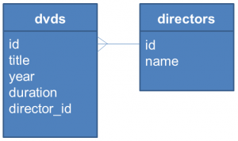

在 Python 2 Tutorial 第一堂（4）中談過基本輸入輸出，除了利用基本 I/O 來保存運算結果之外，Python 中還提供了一些方式，可以直接保存物件狀態，在下次重新執行程式時讀取以恢復運算時必要的資料，在這邊要介紹幾個方式，像是 …
- 物件序列化（Serialization）
- 如透過
marshal、pickle、cPickle模組 - DBM（Database Manager） - 簡單的 "資料庫" 介面。DBM 物件行為上像個字典（Dictionary）物件，不過鍵（Key）值（Value）型態都必須是字串。
shelve模組 - 一個shelve物件是個像字典的永續物件，不過值可以是pickle模組可處理的 Python 物件。- DB-API 2.0（PEP 249） - 存取資料庫的標準介面。
marshal、pickle 與 cPickle
在物件序列化方面，marshal 是個很基礎的模組，其存在主要是為了支援 Python 的 .pyc 檔案。
一般來說，如果要序列化 Python 物件，使用
pickle 模組會是比較好的方式，pickle 會記錄已經序列化的物件，如果後續有物件參考到相同物件，才不會再度被序列化。pickle 可以序列化使用者自定義的類別及實例，在格式方面，pickle 格證向後相容於新的 Python 版本。
cPickle 模組則是用 C 實作的模組，介面上與 pickle 相同，速度在理想上可達 pickle 的 1000 倍。
來看看使用
pickle 的一些程式範例，這個範例也示範了實作永續機制時的一種模式，用來序列化 DVD 物件的狀態：
class DVD:
def __init__(self, title, year=None,
duration=None, director_id=None):
self.title = title
self.year = year
self.duration = duration
self.director_id = director_id
self.filename = self.title.replace(' ', '_') + '.pkl'
def check_filename(self, filename):
if filename is not None:
self.filename = filename這個
DVD 物件有 title、year、duration、director_id 四個狀態，每個 DVD 物件會以 title 作主檔名，加上 .pkl 副檔名進行儲存。接下來列出儲存物件的 save 方法：
def save(self, filename=None):
self.check_filename(filename)
fh = None
try:
data = (self.title, self.year,
self.duration, self.director_id)
fh = open(self.filename, 'wb')
pickle.dump(data, fh)
except (EnvironmentError, pickle.PicklingError) as err:
raise SaveError(str(err))
finally:
if fh is not None:
fh.close()最主要地，你要以
'wb' 模式開啟檔案，然後使用 pickle.dump 進行物件序列化。接下來列出載入檔案 load 方法定義：
def load(self, filename=None):
self.check_filename(filename)
fh = None
try:
fh = open(self.filename, 'rb')
data = pickle.load(fh)
(self.title, self.year,
self.duration, self.director_id) = data
except (EnvironmentError, pickle.PicklingError) as err:
raise LoadError(str(err))
finally:
...這次是讀取，因此你要用
'rb' 模式開啟檔案，然後使用 pickle.load 載入檔案。這個 DVD 物件可以這麼使用：
filename = 'PyConTutorial2013.pkl'
dvd1 = DVD('PyCon Tutorial', 2013, 1, 'Justin Lin')
dvd1.save()
dvd2 = DVD('PyCon Tutorial')
dvd2.load()
print dvd2DBM
dbm 為柏克萊大學發展的檔案型資料庫，Python 的dbm 模組提供了對 Unix 程式庫的介面。dbm 物件就像個字典，在不需要關聯式資料庫，只需要快速存取鍵值的場合可以使用，dbm 物件的鍵值都必須是字串。Python 提供 DBM 的多數實現，如果你不確定要用哪一種，可以使用 anydbm 模組，它會檢查並選擇系統上可用的 DBM 實作。
在這邊直接轉貼 anydbm — Generic access to DBM-style databases 中的範例程式碼作個示範：
import anydbm
# Open database, creating it if necessary.
db = anydbm.open('cache', 'c')
# Record some values
db['www.python.org'] = 'Python Website'
db['www.cnn.com'] = 'Cable News Network'
# Loop through contents. Other dictionary methods
# such as .keys(), .values() also work.
for k, v in db.iteritems():
print k, '\t', v
# Storing a non-string key or value will raise an exception (most
# likely a TypeError).
db['www.yahoo.com'] = 4
# Close when done.
db.close()shelve 模組
shelve 物件也是個行為上像是字典的物件，與 DBM 差別在於值的部份可以是 pickle 模組可處理的 Python 物件。以下來看個實例，搭配 DAO 模式 來使用 shelve 模組的功能：
class DvdDao:
def __init__(self, shelve_name):
self.shelve_name = shelve_name
def save(self, dvd):
shelve_db = None
try:
shelve_db = shelve.open(self.shelve_name)
shelve_db[dvd.title] = (dvd.year,
dvd.duration, dvd.director_id)
shelve_db.sync()
finally:
if shelve_db is not None:
shelve_db.close()
saveshelve.open 來開啟永續化時的字典檔案，在指定鍵值之後，使用 sync 方法將資料從快取中寫回檔案。接下來列出的 DAO 方法實作也是類似的操作：
def all(self):
shelve_db = None
try:
shelve_db = shelve.open(self.shelve_name)
return [DVD(title, *shelve_db[title])
for title in sorted(shelve_db, key=str.lower)]
finally:
if shelve_db is not None:
shelve_db.close()
return []
def load(self, title):
shelve_db = None
try:
shelve_db = shelve.open(self.shelve_name)
if title in shelve_db:
return DVD(title, *shelve_db[title])
finally:
if shelve_db is not None:
shelve_db.close()
return None
def remove(self, title):
shelve_db = None
try:
shelve_db = shelve.open(self.shelve_name)
del shelve_db[title]
shelve_db.sync()
finally:
if shelve_db is not None:
shelve_db.close()以下是個使用
DvdDao 的例子：
filename = 'dvd_library.slv'
dao = DvdDao(filename)
dvd1 = DVD('PyCon Tutorial 2012', 2012, 1, 'Justin Lin')
dvd2 = DVD('PyCon Tutorial 2013', 2013, 1, 'Justin Lin')
dao.save(dvd1)
dao.save(dvd2)
print dao.all()
print dao.load('PyCon Tutorial 2012')
dao.remove('PyCon Tutorial 2013')
print dao.all()DB-API 2.0（PEP 249）
為 Python 中存取資料庫的標準介面，就我的認知而言，其角色應該是類似於 Java 中的 JDBC。Python 中的sqlite3 模組，提供了 DB-API 2.0 的實作，可用以存取 SQLite 資料庫。接下來的範例，會存取的資料庫表格如下：
{kind=link}

以下直接列出範例程式碼，程式很簡單，應該一目瞭然，API 細節可參考 sqlite3 — DB-API 2.0 interface for SQLite databases。
def connect(name):
create = not os.path.exists(name)
conn = sqlite3.connect(name)
if create:
cursor = conn.cursor()
cursor.execute("CREATE TABLE directors ("
"id INTEGER PRIMARY KEY AUTOINCREMENT UNIQUE NOT NULL, "
"name TEXT UNIQUE NOT NULL)")
cursor.execute("CREATE TABLE dvds ("
"id INTEGER PRIMARY KEY AUTOINCREMENT UNIQUE NOT NULL, "
"title TEXT NOT NULL, "
"year INTEGER NOT NULL, "
"duration INTEGER NOT NULL, "
"director_id INTEGER NOT NULL, "
"FOREIGN KEY (director_id) REFERENCES directors)")
conn.commit()
return conn
def add_dvd(conn, title, year, duration, director):
director_id = get_and_set_director(conn, director)
cursor = conn.cursor()
cursor.execute("INSERT INTO dvds "
"(title, year, duration, director_id) "
"VALUES (?, ?, ?, ?)",
(title, year, duration, director_id))
conn.commit()
def get_and_set_director(conn, director):
director_id = get_director_id(conn, director)
if director_id is not None:
return director_id
cursor = conn.cursor()
cursor.execute("INSERT INTO directors (name) VALUES (?)",
(director,))
conn.commit()
return get_director_id(conn, director)
def get_director_id(conn, director):
cursor = conn.cursor()
cursor.execute("SELECT id FROM directors WHERE name=?",
(director,))
fields = cursor.fetchone()
return fields[0] if fields is not None else None
def all_dvds(conn):
cursor = conn.cursor()
sql = ("SELECT dvds.title, dvds.year, dvds.duration, "
"directors.name FROM dvds, directors "
"WHERE dvds.director_id = directors.id"
" ORDER BY dvds.title")
cursor.execute(sql)
return [(str(fields[0]), fields[1], fields[2], str(fields[3]))
for fields in cursor]
def all_directors(conn):
cursor = conn.cursor()
cursor.execute("SELECT name FROM directors ORDER BY name")
return [str(fields[0]) for fields in cursor]以下是個存取資料庫的例子：
db_name = 'dvd_library.sqlite3'
conn = connect(db_name)
add_dvd(conn, 'Python Tutorial 2013', 2013, 1, 'Justin')
print all_directors(conn)
print all_dvds(conn)練習 8：永續化機制
在 Lab 檔案中有個 lab/exercises/exercise8，當中有 pickle、shelve、sql 三個資料夾，分別是上頭三個程式範例，不過程式碼內容不完整，請任選你想要練習的對象，按加上頭列出的範例程式碼，就不齊全的部份補齊。
完成這個練習後，第三堂應該時間就差不多到了，休息一下，接下來的第三堂課要來認識 Python 的 Web 框架 …
參考資源
- The Community
- 永續化